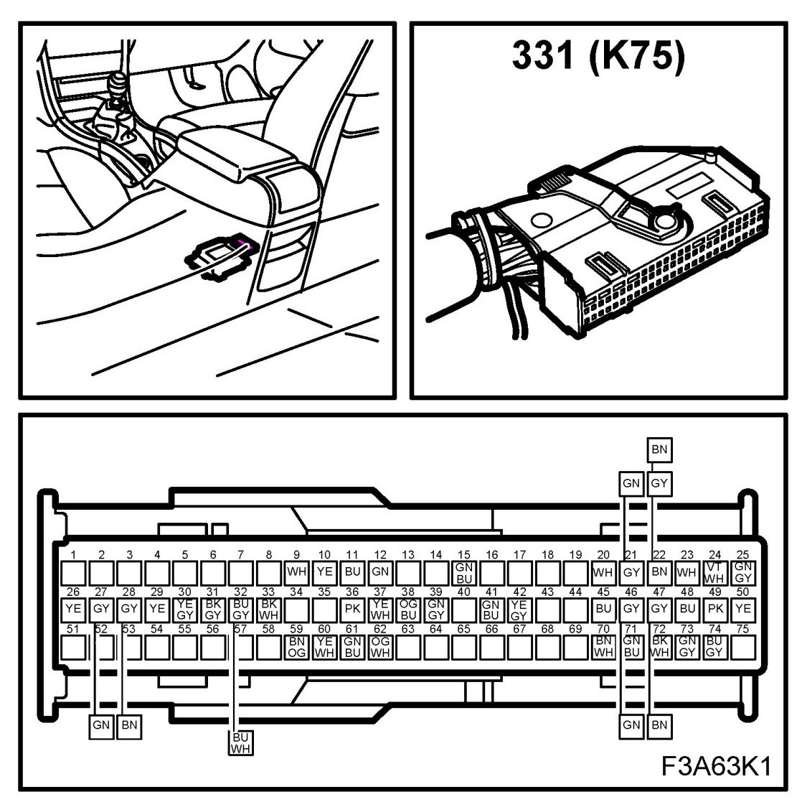
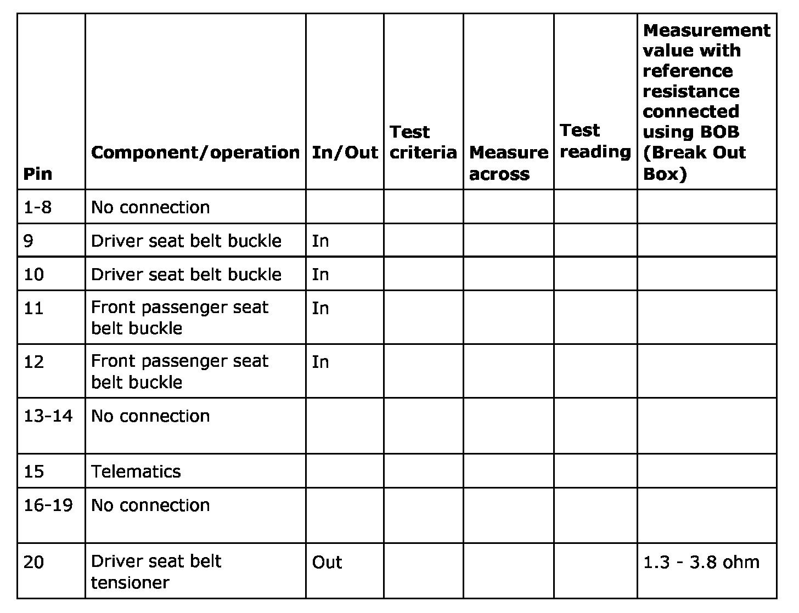
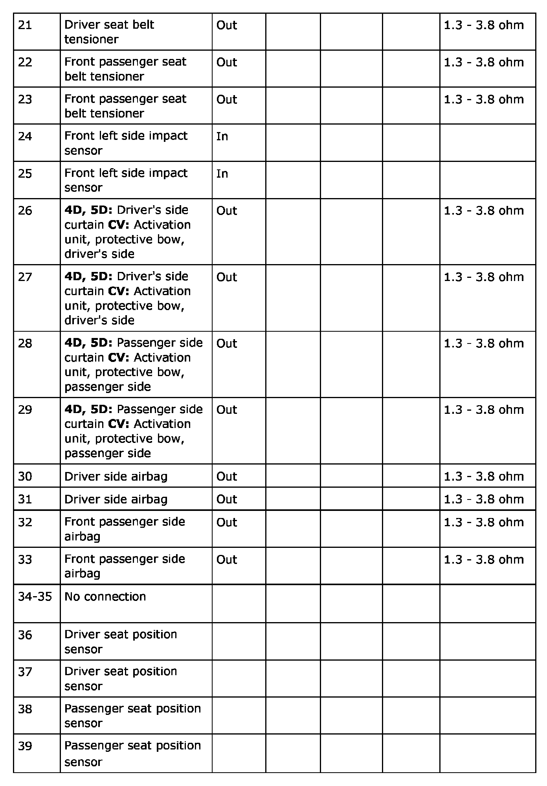
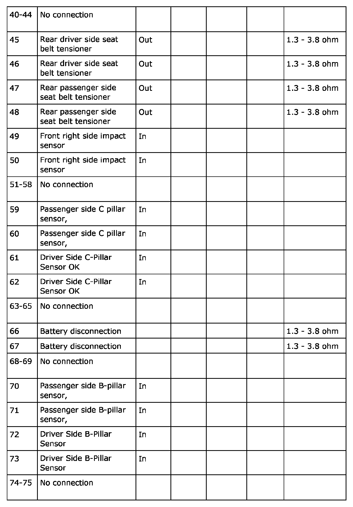
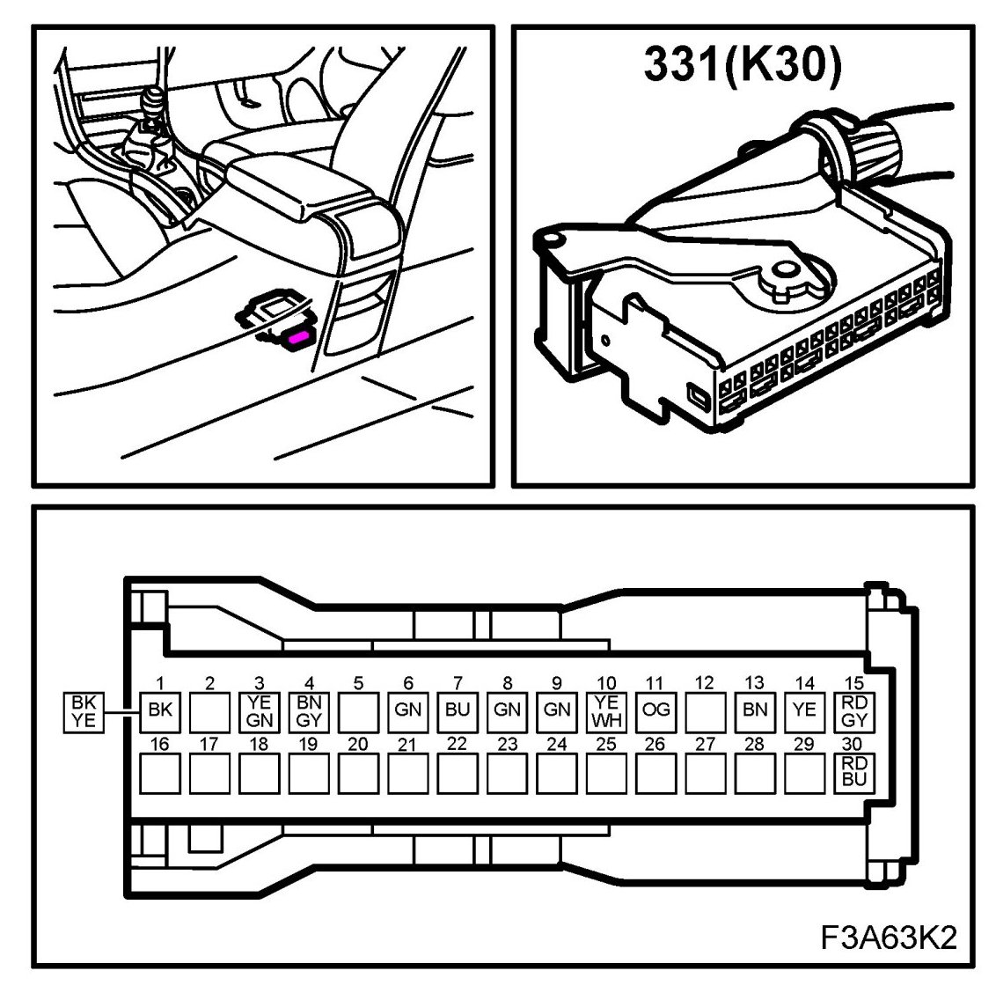
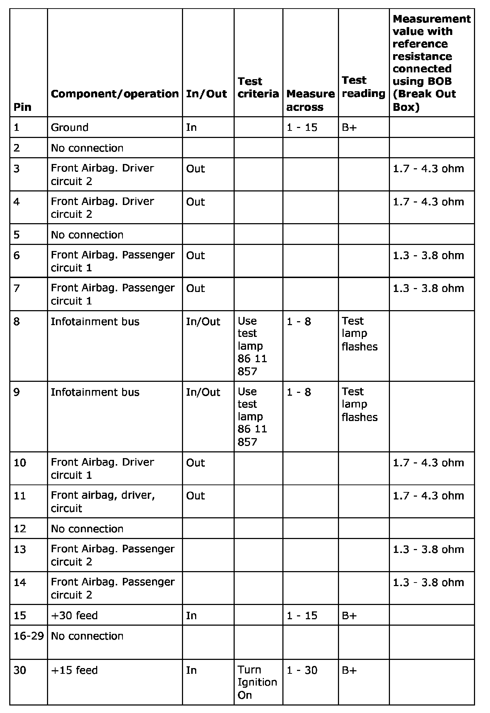

Restraints and Safety Systems
Test Readings, Control Module Connections
NOTE:
- Testing using a test instrument must not be carried out on the ignition circuit with components connected.The components must be disconnected and a reference resistance connected before testing is carried out. Values can be read from the ignition circuit with components connected when using the diagnostic tool. The values stated for the diagnostic tool show within which interval the resistance should be with a correct circuit.
- All units on the I and P-buses send signals.
75-pin connector
The following table contains values for testing the air bag system levels. Testing should be carried out using the diagnostic tool.
Number of connector pins 75
Connector K75




NOTE: Testing using a test instrument must not be carried out on the ignition circuit with components connected.The components must be disconnected and a reference resistance connected before testing is carried out. Values can be read from the ignition circuit with components connected when using the diagnostic tool. The values stated for the diagnostic tool show within which interval the resistance should be with a correct circuit.
30-pin connector
The following table contains values for testing the air bag system levels. Testing should be carried out using the diagnostic tool.
NOTE: All units on the I and P-buses send signals.
Number of connector pins 30
Connector K30

